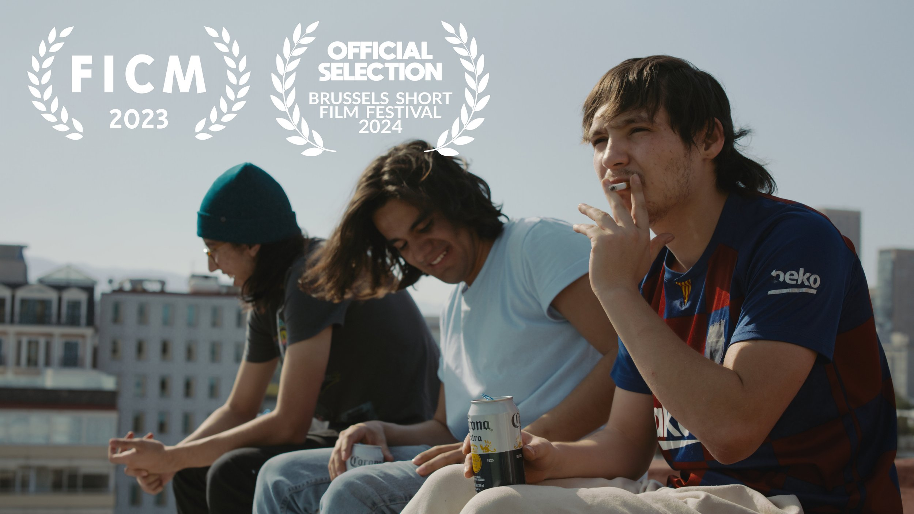
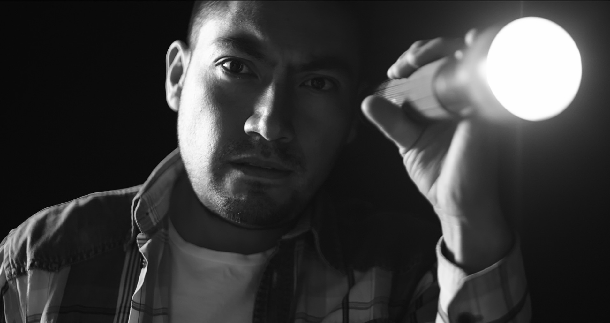

matías rodríguez sfeir

Plumaje (2023)
15 minutes
a coming-of-age short that explores the effects of machismo culture on young men in Mexico

Gloria (2021)
9 minutes
A photojournalist finds himself embroiled in an escalating argument about
the ethics of disturbing images.
Matias Rodriguez Sfeir is a writer-director born and raised in Mexico City.
He studied film & television at Centro de Diseño, Cine y Television before
attending London Film School for a masters in screenwriting.
His thesis film "Plumaje" (2023) was screened at Morelia International Film Festival
and Brussels Short Film Festival.


matiasrodriguezsfeir@gmail.com